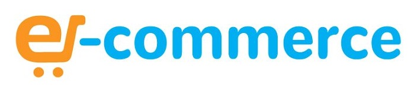
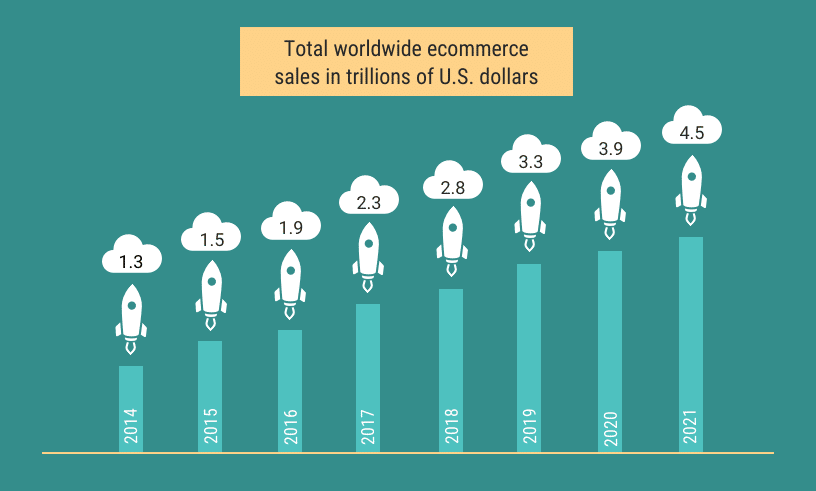

| COMPANY | GMV(TTM) | TYPE(s) OF ECOMMERCE |
|---|---|---|
| Alibaba | > $768 billion | B2B,C2C |
| Amazon | $239 billion | B2C,C2C |
| JD.com | $215 billion | C2C,B2C |
| ebay | $93 billion | C2C,C2B |
| Shopify | $33 billion | C2C |

Ecommerce, also known as electronic commerce or internet commerce, refers to the buying and selling of goods or services using the internet, and the transfer of money and data to execute these transactions. Ecommerce is often used to refer to the sale of physical products online, but it can also describe any kind of commercial transaction that is facilitated through the internet.
Whereas e-business refers to all aspects of operating an online business, ecommerce refers specifically to the transaction of goods and services.
The history of ecommerce begins with the first ever online sale: on the August 11, 1994 a man sold a CD by the band Sting to his friend through his website NetMarket, an American retail platform. This is the first example of a consumer purchasing a product from a business through the World Wide Web—or “ecommerce” as we commonly know it today.
Since then, ecommerce has evolved to make products easier to discover and purchase through online retailers and marketplaces. Independent freelancers, small businesses, and large corporations have all benefited from ecommerce, which enables them to sell their goods and services at a scale that was not possible with traditional offline retail.

Which e-commerce company is the biggest?
Perhaps the most universal way to compare online stores is with a metric called gross merchandise value, or GMV. (Gross merchandise value is also sometimes referred to as gross merchandise volume, or gross merchandise sales.) GMV is a measure of the total value of all items sold on an online store or marketplace.GMV is a lot different from revenue.eBay operates as a marketplace, and it doesn't sell items directly to consumers. As such, its revenue is a small percentage of its GMV. Shopify (NYSE:SHOP) makes it easy for other businesses to sell goods on their own websites, so it also generates a small amount of revenue compared to GMV on its platform.
| COMPANY | GMV(TTM) | TYPE(s) OF ECOMMERCE |
|---|---|---|
| Alibaba | > $768 billion | B2B,C2C |
| Amazon | $239 billion | B2C,C2C |
| JD.com | $215 billion | C2C,B2C |
| ebay | $93 billion | C2C,C2B |
| Shopify | $33 billion | C2C |
Here, we’ll shed light on some of the most common platforms on which ecommerce takes place.
Online storefronts
Online marketplaces
Social media